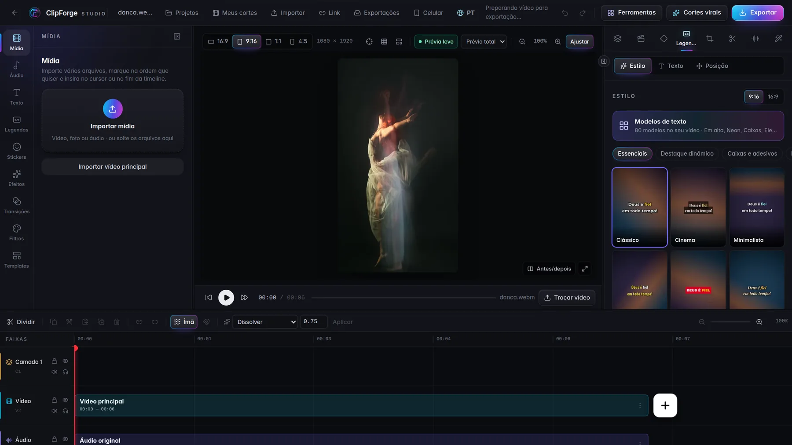

ClipForge › Remover fundo de vídeo
Remover fundo
Remover fundo de vídeo sem tela verde
Grave em qualquer lugar: a IA do ClipForge separa a pessoa (ou o produto) do fundo, quadro a quadro, e você troca o cenário por uma cor, uma imagem, outro vídeo ou um desfoque — sem tela verde e sem enviar o vídeo para a internet.

Como remover o fundo
- Selecione o clipe na linha do tempo.
- Abra Remover fundo e escolha Pessoa ou Objeto ou produto.
- Escolha o novo fundo: cor, imagem, vídeo, desfocado ou transparente (para usar como camada).
- Confira na prévia e exporte.
Pessoas e objetos
Para pessoas, o ClipForge usa uma IA de recorte de vídeo que mantém cabelo e contorno estáveis entre os quadros. Para produtos e objetos, um segundo modelo cuida do recorte. Também há chroma key para quem já grava com fundo verde ou azul.
Tudo no seu computador
O recorte roda no seu PC: seus vídeos não são enviados para servidores. Na primeira vez, o modelo de IA é baixado automaticamente; depois, funciona sem internet.
Perguntas frequentes
Precisa de tela verde?
Não. A IA recorta a pessoa em qualquer cenário. Se você já usa tela verde, o chroma key também está disponível.
Posso deixar o fundo transparente?
Sim. O vídeo recortado pode virar uma camada transparente por cima de outro vídeo.
Funciona em vídeo longo?
Sim. Vídeos longos são processados em partes ao mesmo tempo para ganhar velocidade.